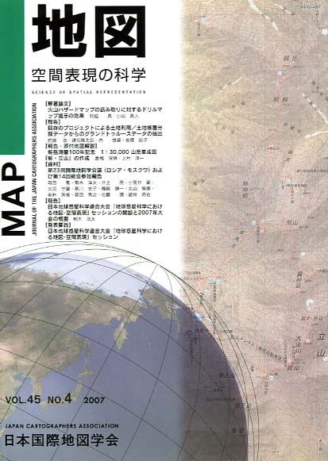
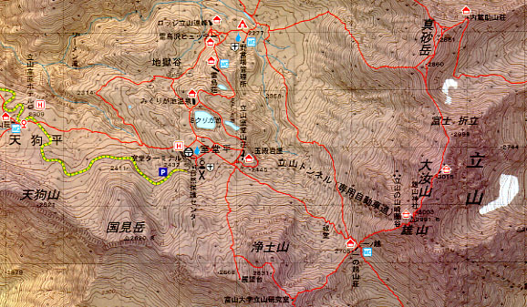
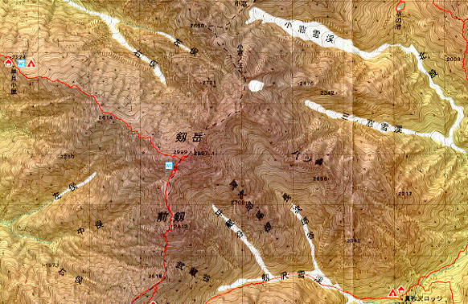

| 最 新 号 | バックナンバー | 添付地図目録 | 投 稿 規 程 |
Vol.45 No.4 （通巻１８０号） ２００７年
| 【原著論文】 | 火山ハザードマップの読み取りに対するドリルマップ提示の効果 | 村越 真・小山真人 |
| キーワード：ハザードマップ、ドリルマップ、読み取り、リスクコミュニケーション | ||
| 【報告】 | 既存のプロジェクトによる土地利用／土地被覆分類データからのグランドトゥルースデータの抽出 | 佐藤 浩・建石隆太郎・肖 捷穎・岩橋純子 |
| キーワード：グランドトゥルース、土地利用、土地被覆 | ||
| 【報告・添付地図解説】 | 剱岳測量100年記念1:30,000山岳集成図「剱・立山」の作成 | 高橋保博・上村淳一 |
| キーワード：劔岳、山岳集成図、登山道、地形表現 | ||
| 【資料】 | 第23回国際地図学会議（ロシア・モスクワ）および第14回総会参加報告 | 森田 喬・熊木洋太・井上 亮・小荒井衛・太田守重・黒川史子・鶴岡謙一・丸山智康・若林芳樹・藤田秀之・佐藤 潤・細井将右 |
| キーワード：ＩＣＡ、国際地図学会議、総会、モスクワ、ロシア | ||
| 【報告】 | 日本地球惑星科学連合大会「地球惑星科学における地図・空間表現」セッションの開設と2007年大会の概要 | 熊木洋太 |
| キーワード：日本地球惑星科学連合大会、2007、地図・空間表現、セッション | ||
| 【発表要旨】 | 日本地球惑星科学連合大会「地球惑星科学における地図・空間表現」セッション | |
| 【書評・紹介】 | 近世日本の地図と測量：村と「廻り検地」 | 鈴木純子 |
| 【特別会員のページ】 | （財）日本デジタル道路地図協会（ＤＲＭ） | |
| 株式会社アルプス社 | ||
| 【学会記事】 | ||
| 【年間総目次】 | ||
| 【添付地図】 | 剱岳測量100年記念 1：30,000山岳集成図「剱・立山」 | |
|
≪No.45 No.4 表紙≫ |
|
|  |
|
|
|
≪No.45 No.4 添付地図−抜粋≫ |
| 
 添付地図は初版を複製したものであり、表示の誤りは訂正されていません。訂正内容は下記をご覧ください。 http://www.gsi.go.jp/LOCAL/hokuriku/100syuunen/syuseizu2.html
本図を許可なく複製・利用することを禁止します。 |